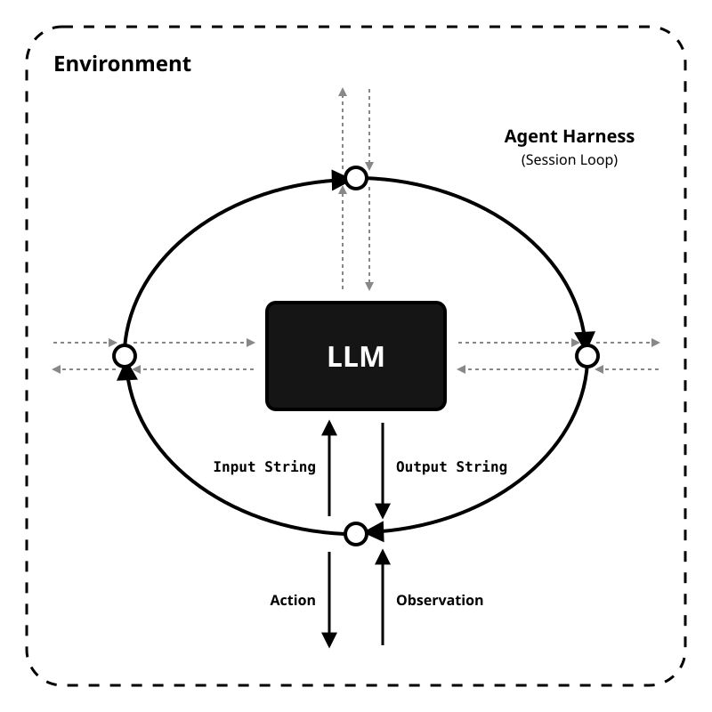

There are many coding agents, but this one is mine.
Build your own harness.
Ready to go.
Built to extend.
Knows how to build itself.
https://pi.dev github.com/badlogic/pi-mono
github.com/badlogic/pi-mono
What is an “agent harness”?
- Deterministic code + engineered prompts around the model
- The set of abstractions which transforms IO machine into “agent”
In Pi, the default tool belt is read, write, edit, and bash.

What is harness engineering?
Definition
- Designing the system around the model
- Shaping how the agent sees, acts, and fits your workflow
- More than prompting: tools, UX, memory, constraints, extensions
Why Pi matters
- Small core of strong defaults
- Extensions as first-class primitive
- Install or write the missing piece
- Learn it all, as you go
Pi’s modes
Same harness, four different surfaces.
TUI for humans
Editor, chat history, sessions, commands, model switching.
pi
CLI for scripts
One-shot output, or stream every event as JSON lines.
pi -p "..."pi --mode json "..."
Embed the agent
Use the same session engine directly from Node/TypeScript.
createAgentSession()
Process integration
Headless JSONL protocol over stdin/stdout for non-JS IDEs and other apps.
pi --mode rpc
Compose a Pi for one job
A custom session can be just a Bash alias.
alias researcher='pi \
--tools read,bash,grep,find,ls \
--extension ~/.pi/agent/extensions/web-search.ts \
--extension ~/.pi/agent/extensions/fetch-content.ts \
--no-session'Same Pi, different affordances
- No
writeoredit - Adds research extensions
- Easy to launch, easy to share
Aliases are jobs.* Presets are states.
A preset is a named bundle of model, thinking, tools, and instructions.
Switchable workflow shapes inside Pi
- Start with
--preset plan - Switch later with
/preset - Define globally or in
.pi/presets.json
Plan → implement → review
- Aliases launch a role
- Presets express a state transition
- CLI flags still override when needed
*Or whatever you want them to be. You know the Shell.
Tiny example extension:
Claude-only prompt injection
export default function (pi) {
let claudePrompt;
pi.on("model_select", async ({ model }) => {
claudePrompt = model.id.includes("claude")
? "Seek existing windows for this shootout before blasting new holes, cowboy."
: null;
});
pi.on("before_agent_start", async (event) => {
if (!claudePrompt) return;
return { systemPrompt: `${event.systemPrompt}\n\n${claudePrompt}` };
});
}Prompt logic can follow the active model
model_selectupdates extension statebefore_agent_startinjects per-turn- No Claude, no Claude-specific system prompt
Configuration is part of the software
Not one global agent. Many deliberately-shaped Pis.
- Per-user defaults
- Per-project files and extensions
- Per SDK call and resource loader
- Per RPC exchange
- Per alias / preset / command line
Dependency injection for the harness
Model choice, tool belt, prompts, auth, and UI are not “the product.” They’re parameters you can bind differently for each repo, team, or workflow.
Pi breaks the consumer-software mindset
“Does it have my feature?”
- their plan mode
- their permission UX
- their auth assumptions
- their workflow opinions
“How should this work here?”
- compose the tools
- inject the context
- build the missing extension
- make the workflow yours
A customization ladder
Text files
AGENTS.md, SYSTEM.md, prompts, settings.
Skills
Reusable instructions for focused capabilities and workflows.
Extensions
Tools, commands, UI, state, event hooks, custom providers.
SDK / RPC
Embed or drive the harness from your own application.
And yes, you can share it
pi install npm:@your-org/pi-team-tools
pi install git:github.com/your-org/pi-workflows
pi listShip prompts, skills, extensions, themes
Team conventions can be versioned, installed, reviewed, and evolved like any other dependency.
Pi is not trying to be the default for everyone
Opinionated tools for broad audiences
That can be great. Strong defaults, polished workflows, faster onboarding.
Specialize the harness to the work
Per repo. Per team. Per model. Per workflow. Less “accept the featureset,” more “shape the agent around the environment.”
Setup
brew install pi-coding-agent
Then run pi.
/login
Sign into Claude, ChatGPT Codex, Copilot, Gemini CLI, or Antigravity from interactive mode.
~/.pi/agent/auth.json
Stores API keys and OAuth tokens. /logout clears them. OAuth tokens auto-refresh.
Env vars or custom auth path
ANTHROPIC_API_KEY, OPENAI_API_KEY, or AuthStorage.create("/tmp/my-app/auth.json").
Resolution order: --api-key → auth.json → environment variable.
Links
- pi.dev
- Github: badlogic/pi-mono
- NPM: @mariozechner/pi-coding-agent
- Install:
brew install pi-coding-agent - LinkedIn: /in/dmgregg
- IndyHackers Slack: "DMG"
- YouTube: @indydevdan
dmg-egg.github.io/slides-harness-engineering-with-pi/